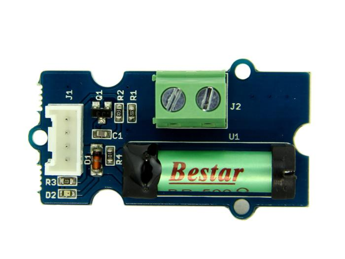

The Grove-Dry-Reed Relay is a relay module which works through magnetizing the vibration reed via the current in the coils. Compared to electromagnetic relays, the contacts completely sealed is the biggest feature of the Dry-Reed Relay. Besides, it features simplicity in construct, compactness, fast speed and long life, which make it widely applied in many fields such as microelectronic detection, Automatic Control etc.
Model: COM04071P

| Item | Min | Typical | Max | Unit |
|---|---|---|---|---|
| Voltage | 4.8 | 5.0 | 5.2 | VDC |
| Coil Resistance | 225 | 250 | 275 | Ω |
| Pick-Up Voltage | 3.75 | VDC | ||
| Switching Current(Max) | 0.5 | A | ||
| Switching Voltage(Max) | 120 VAC/60VDC | - | ||
| Carrying Current(Max) | 1.0 | A | ||
| Operate Time(Max) | 1.0 | mS | ||
| Release Time(Max) | 0.5 | mS | ||
| Mechanical Life(at no load) | 1×108 operations | - | ||
| Ambient Temperature | -30 | / | 70 | ˚C |
The Dry-Reed Relay can support up to 60VDC 1A load. You can use it to control resistance load, but it is not applicable to inductive load(such as Motor).
the usage if this Dry-reed relay is quite alike that of common relays.
int Relay = 2;
// the setup routine runs once when you press reset:
void setup() {
// initialize the digital pin as an output.
pinMode(Relay, OUTPUT);
}
// the loop routine runs over and over again forever:
void loop() {
digitalWrite(Relay, HIGH); //the Relay close(HIGH is the voltage level)
delay(5000); // wait for five seconds
digitalWrite(Relay, LOW); //the Relay normally open by making the voltage LOW
delay(5000); // wait for five seconds
}
1.You should have got a raspberry pi and a grovepi or grovepi+.
2.You should have completed configuring the development enviroment, otherwise follow here.
3.Connection
4.Navigate to the demos' directory:
cd yourpath/GrovePi/Software/Python/
nano grove_relay.py # "Ctrl+x" to exit #
import time
import grovepi
# Connect the Grove Relay to digital port D4
# SIG,NC,VCC,GND
relay = 4
grovepi.pinMode(relay,"OUTPUT")
while True:
try:
# switch on for 5 seconds
grovepi.digitalWrite(relay,1)
print "on"
time.sleep(5)
# switch off for 5 seconds
grovepi.digitalWrite(relay,0)
print "off"
time.sleep(5)
except KeyboardInterrupt:
grovepi.digitalWrite(relay,0)
break
except IOError:
print "Error"
5.Run the demo.
sudo python grove_relay.py
Grove - Dry-Reed Relay Eagle File
Dry-Reed Relay Datasheet
If you have questions or other better design ideas, you can go to our forum or wish to discuss.
Copyright (c) 2008-2016 Seeed Development Limited (www.seeedstudio.com / www.seeed.cc)